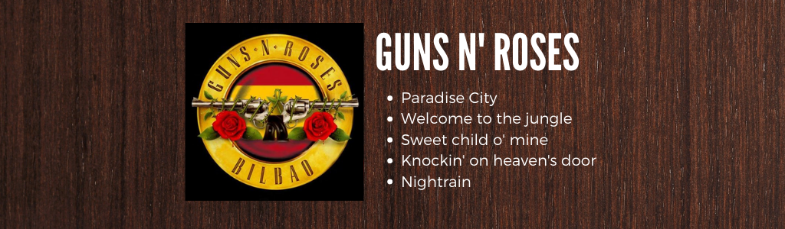
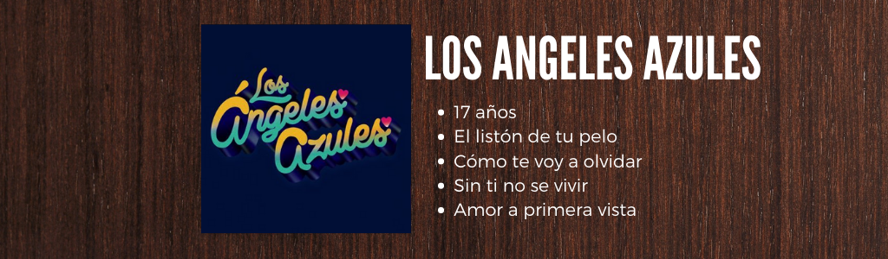
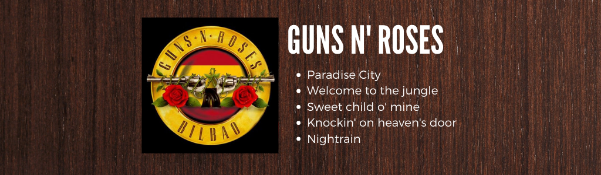
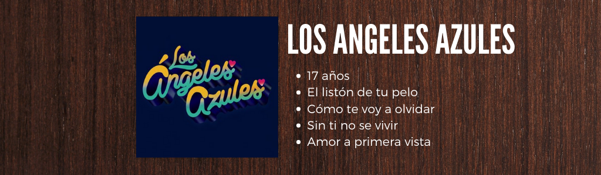

Soy Sergio Ángel Hernández Luis estudiante de Ingeniería en Computación en la Facultad de Ingeniería de la UNAM. Actualmente estoy cursando la materia de sistemas operativos, en donde estoy aprendiendo el funcionamiento de estos, además, he podido conocer nuevos SO, lo cual me ha permitido ampliar el panorama que tenia sobre estos. En esta pequeña presentación podran econtrar mis gustos en: 1.- Musica. 2.- Deportes 3.- Hobbies
La música es parte vital de mi vida cotidiana, ya que escucho música en la mayoría de las actividades que realizo, desde hacer tarea, ejercicio, trabajo, etc. Por ello, considero que ningún género me desagrada pues puedo escuchar salsa, pop, rock, rap, reggaetón, banda, cumbias, etc.
A continuacion, podras ver algunas de las canciones que escucho:
 



También soy fan de varios deportes, por lo que dividiré esta sección en dos partes. La primera será para los que practico y en la segunda parte estarán los que me gusta ver.
Desde pequeño me ha gustado jugar futbol, en donde, me gusta jugar como de mediocentro ofensivo. Y la posición que menos me gusta es portero. Asimismo, me gusta salir a correr, ya que se me hace una actividad en la que puedo dejar mi mente en blanco y relajarme. De hecho, actualmente me estoy preparando para participar en el maratón de la CDMX 2021, y estoy muy emocionado ya que será mi primer maratón. Por último, trato de ir, por lo menos, 4 días a la semana al gimnasio. Ya que siento que me ayuda a liberar todo el estrés de las actividades que realizo.
Por otra parte también disfruto ver diferentes deportes algunos de ellos son los siguientes: Futbol: Me gusta ver partidos de mis equipos favoritos que son el Barcelona de la liga española y Guadalajara de la liga mexicana. Aunque, actualmente también veo los partidos del PSG, ya que ahí juega Lionel Messi y es mi jugador favorito.
Cuando tengo tiempo libre disfruto hacer meditación, ya que considero que a través de estas practicas podemos tener un tiempo para mí.